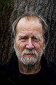

A.L. Snijders (Amsterdam, 24 september 1937), pseudoniem van Peter Cornelis Müller, is een Nederlands schrijver die in Klein Dochteren woont.
Snijders maakte furore als schrijver van columns (onder andere bij Het Parool) en staat nu bekend als een van de grootste schrijvers van het zeer korte verhaal, kortweg zkv genoemd.
Foto: Roelof de Vries (bron Wikimedia)
Bad
Ik was uitgenodigd om iets voor te lezen in een villa op Scheveningen. Daaraan voorafgaand mocht ik eten en slapen in het Hilton hotel. Het eten was heerlijk, hoewel ik later van andere schrijvers hoorde dat het heel slecht was. Ze legden uit waarom, maar ik bleef met terugwerkende kracht tevreden. Confrontaties en misverstanden.
Na het eten kwam de kamer. Ik logeer tegenwoordig wel eens vaker in een hotel, maar deze keer was de luxe opvallend, vooral de badkamer maakte me nederig, nooit heb ik voor een grotere spiegel gestaan. Ik douche me in het dagelijks leven elke ochtend, kort, twee à drie minuten, dat is genoeg, mijn kop wordt nat en de rest ook. Bovendien is het goed voor het milieu en mijn portemonnee. Voor elke diepliggende beslissing is een oppervlakkig excuus.
In het Hilton nam ik een belangrijk besluit, ik zou een bad nemen, voor het eerst in zeventig jaar. Het duurde lang voordat er genoeg water in zat, maar wat me vooral trof was dat mijn hoofd droog bleef – dat vind ik een nadeel van het bad. Het hoofd heeft een douche nodig, het lichaam een bad.